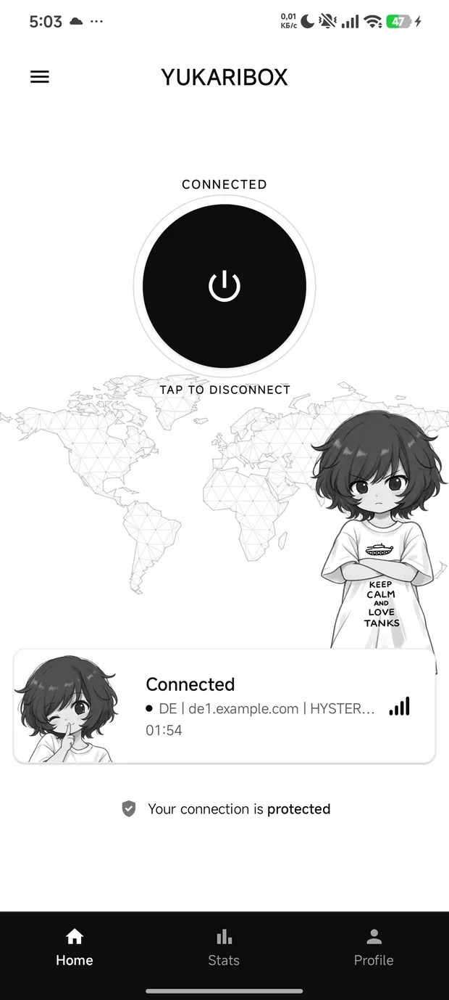
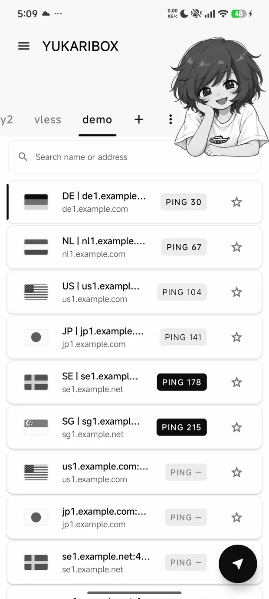
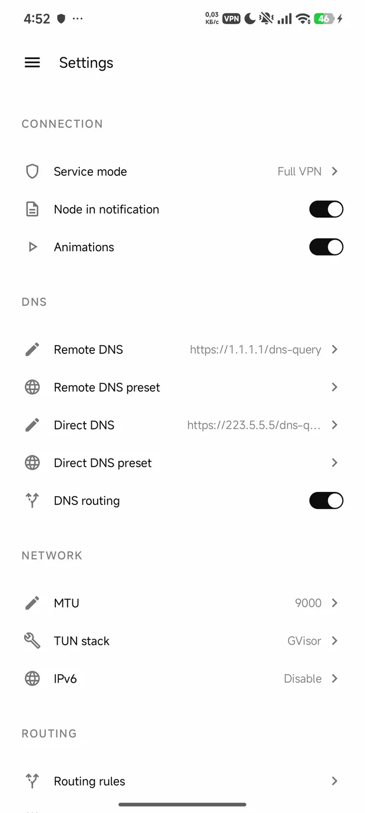

Verify the file Проверьте файл
sha256sum YukariBox-arm64.apk
certutil -hashfile YukariBox-arm64.apk SHA256


Why you would want this oneПочему стоит взять именно это
If the connection drops, nothing leaks out
Если соединение оборвётся, ничего не утечёт
The dangerous moment for a VPN is the moment it breaks: that is when traffic tends to fall back to the ordinary network without anyone being told. Here it simply stops. Nothing goes anywhere until you decide what to do — and there is no switch to turn that off, so it cannot be off by accident. It is also honest about half-cover: when only some of your apps are going through the tunnel, it says so instead of showing a reassuring green light.
Опасный момент для VPN — это момент, когда он ломается: именно тогда трафик обычно возвращается в обычную сеть, никого об этом не предупредив. Здесь он просто останавливается. Никуда ничего не идёт, пока вы не решите, что делать, — и выключателя у этого нет, поэтому случайно выключенным оно не окажется. И про неполное покрытие приложение говорит честно: если через туннель идёт только часть приложений, оно так и напишет, а не покажет успокаивающий зелёный огонёк.
It keeps no diary about you
Оно не ведёт о вас дневник
Out of the box nothing is written down at all: not which servers you use, not when you connected, not a single line. A log is a tool for fixing a problem, so you switch it on when you have one — and switching it back off erases what it wrote. Whatever it records stays on your phone.
Из коробки не записывается ничего: ни какими серверами вы пользуетесь, ни когда подключались, ни одной строки. Лог — это инструмент для починки проблемы, поэтому вы включаете его, когда проблема есть, — а выключение стирает написанное. Всё, что он записывает, остаётся на вашем телефоне.
There is nobody for it to report to
Ему некому докладывать
This app has no server of its own, so there is nothing for it to phone. It reaches exactly four things, and all four are yours: your subscription link, your DNS server, the address it pings to check the connection works, and the server you chose. No analytics, no anonymous statistics, no update check — and nothing in it that could send them even if someone wanted to.
У этого приложения нет своего сервера, поэтому звонить ему некуда. Оно обращается ровно к четырём вещам, и все четыре — ваши: ваша ссылка на подписку, ваш DNS-сервер, адрес, который оно пингует для проверки связи, и выбранный вами сервер. Ни аналитики, ни анонимной статистики, ни проверки обновлений — и внутри нет ничего, что могло бы их отправить, даже если бы кто-то захотел.
Your passwords are treated like passwords
С вашими паролями обращаются как с паролями
Server passwords never pass through anywhere another app, or a bug report, could read them along the way. And your server list survives a bad moment: every save is written so that a crash or a flat battery halfway through leaves the previous version whole rather than an empty file. That is not hypothetical — one interrupted write is exactly how a whole saved list was lost once.
Пароли серверов нигде не проходят через место, где их по пути смогли бы прочитать другое приложение или отчёт об ошибке. И ваш список серверов переживает неудачный момент: каждое сохранение устроено так, что сбой или разрядившаяся посреди записи батарея оставляют целой прежнюю версию, а не пустой файл. Это не гипотеза — именно одна прерванная запись однажды и уничтожила весь сохранённый список.
It notices when a server quietly dies
Оно замечает, когда сервер тихо умер
A connection can look perfectly alive long after it has stopped carrying anything: the server got blocked, or overloaded, or simply went away. This app watches the live connection rather than only the moment you pressed connect — when the traffic goes silent it checks, and rebuilds the connection if the server really is gone.
Соединение может выглядеть совершенно живым долго после того, как перестало что-либо нести: сервер заблокировали, перегрузили или он просто исчез. Это приложение следит за живым соединением, а не только за моментом, когда вы нажали «подключиться»: когда трафик замолчал, оно проверяет и пересобирает соединение, если сервер действительно пропал.
Nothing here has to be taken on trust
Здесь ничего не нужно принимать на веру
The source is open and small enough that a person can actually read it — one module, no hidden machinery. Every library it uses is pinned by checksum, so none of them can be swapped out underneath it. And the build is deliberately repeatable: with the same toolchain, anyone can rebuild the app and compare it with the file published here.
Исходный код открыт и достаточно мал, чтобы человек действительно смог его прочитать: один модуль, никакой скрытой машинерии. Каждая библиотека прибита контрольной суммой, поэтому ни одну из них нельзя подменить незаметно. И сборка намеренно повторяема: с тем же тулчейном любой может собрать приложение и сравнить с файлом, опубликованным здесь.